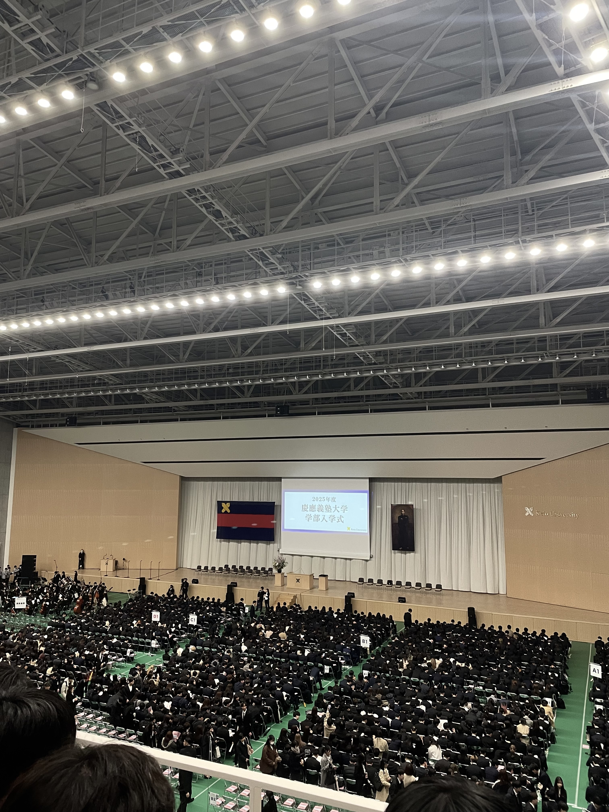
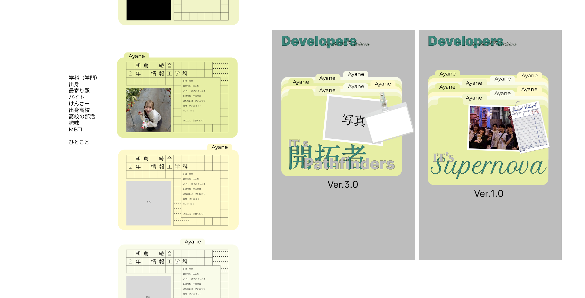
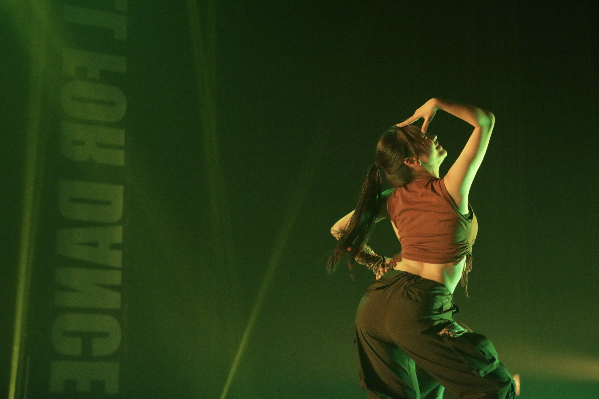
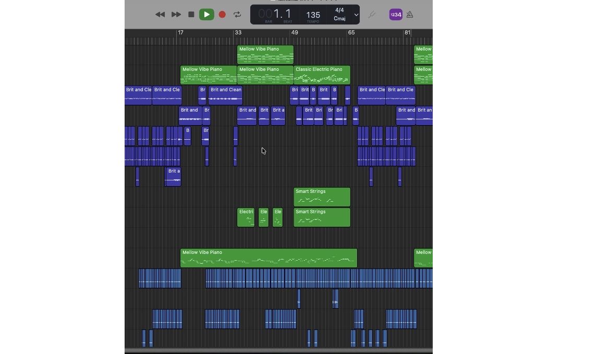
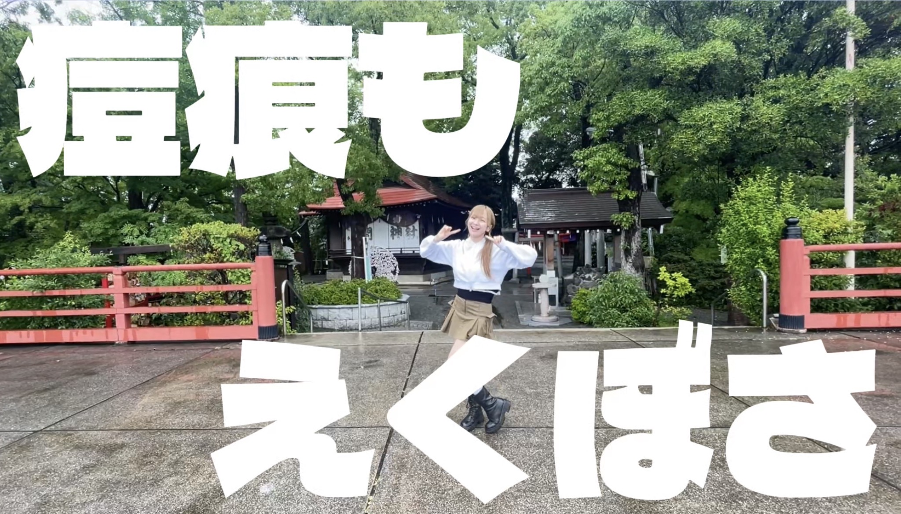
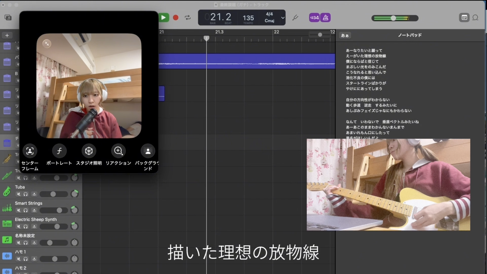
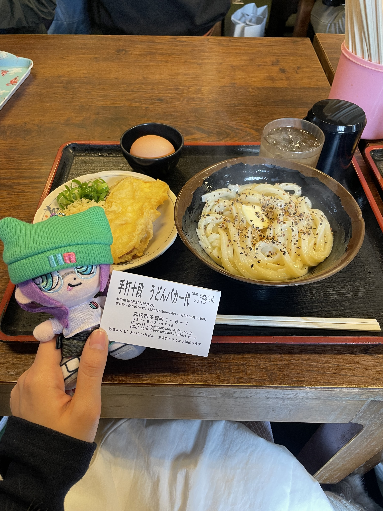
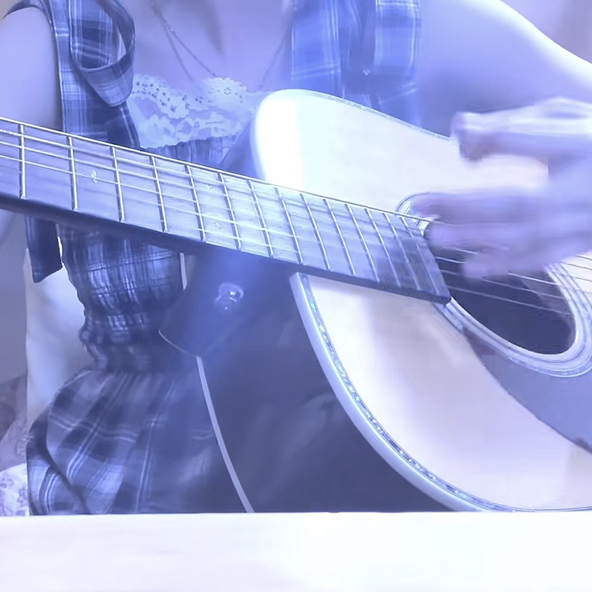
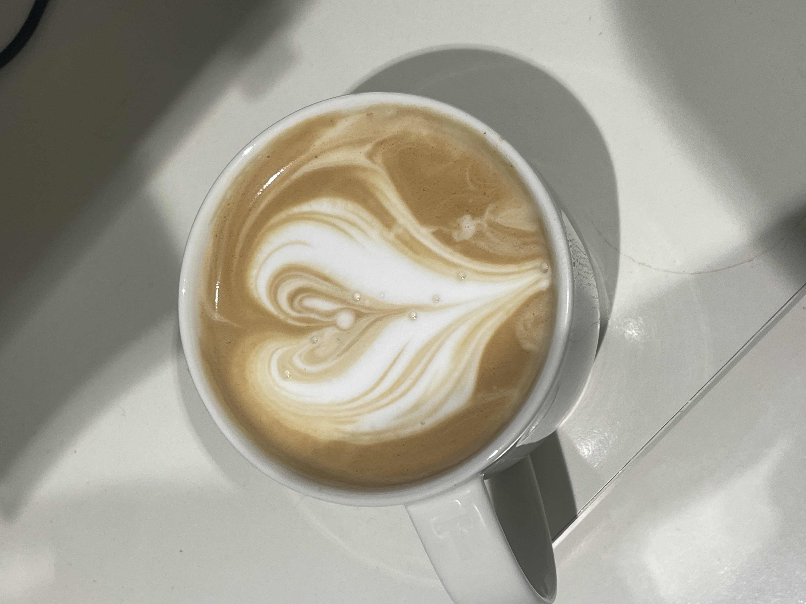

学校について
慶應義塾大学通っています
日吉から15分くらいになります。
くるぶしのウェブサイト
WebDesignコースを受講している大学2年生です。学校のクラスTシャツやウェブサイトのデザインを考えるのが楽しくて、ドハマり中です!


ダンス部に大１の頃から所属しています！
踊っているジャンルは主にHiphopとGirls Hiphopです。
文化祭や新入生歓迎会でステージに立ちます。



Leadersでは初音ミク/DTMコースを受講していました！
どうしても、このコースに入りたくて、
コース希望を出した次の日に自腹でmacbookを購入しました⭐︎
これからもいっぱい曲作りたいです♪

うどん、ラーメン、油そば…お腹いっぱいになるまで、すすることがだーいすきです。

コロナ禍に突入した中学２年生の頃に410というアーティストに憧れてアコースティックギターを始めました。弾き語りすごく楽しい。

某コーヒーチェーン店でアルバイトし始めたのがきっかけで、コーヒーが大好きになりました！ラテアート修行中